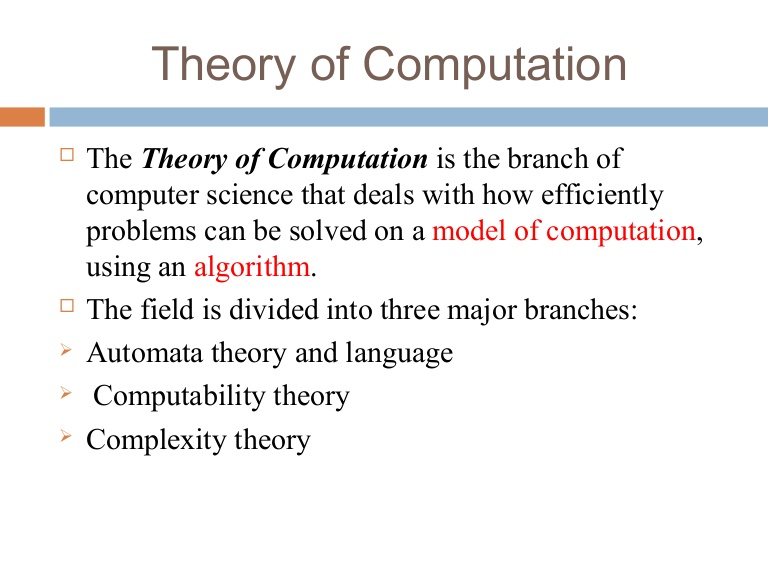
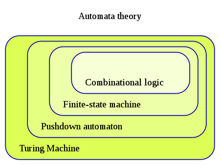

Formal Language and Automata
Automata theory is the study of abstract machines and automata, as well as the computational problems that
can be solved using them. It is a theory in theoretical computer science.
The word automata (the plural of automaton) comes from the Greek word αὐτόματα, which means "self-making".


An automaton is a construct made of states designed to determine if the input should be accepted or rejected.
It looks a lot like a basic board game where each space on the board represents a state. Each state has information
about what to do when an input is received by the machine (again, rather like what to do when you land on the Go To
Jail spot in a popular board game). As the machine receives a new input, it looks at the state and picks a new spot
based on the information on what to do when it receives that input at that state. When there are no more inputs,
the automaton stops and the space it is on when it completes determines whether the automaton accepts or rejects
that particular set of inputs.
Classes Of Automata
| Automaton |
Recognisable Languages |
| Nondeterministic/Deterministic Finite state machine (FSM) |
Regular languages |
| Deterministic Pushdown Automata (PDA) |
Deterministic context-free languages |
| Pushdown Automaton (PDA) |
Context free languages |
| Linear bounded Automaton (LBA) |
Context-sensitive languages |
| Turing Machines |
Recursively enumerable languages |
| Deterministic Büchi automaton |
ω-limit languages |
| Nondeterministic Büchi automaton |
ω-regular languages |
| Rabin automaton, Streett automaton, Parity automaton, Muller automaton |
ω-regular languages |
Applications:
Each model in automata theory plays important roles in several applied areas.
Finite automata are used in text processing, compilers, and hardware design.
Context-free grammar (CFGs) are used in programming languages and artificial intelligence.
Originally, CFGs were used in the study of the human languages. Cellular automata are used
in the field of biology, the most common example being John Conway's Game of Life. Some other
examples which could be explained using automata theory in biology include mollusk and pine
cones growth and pigmentation patterns. Going further, a theory suggesting that the whole universe
is computed by some sort of a discrete automaton, is advocated by some scientists. The idea
originated in the work of Konrad Zuse, and was popularized in America by Edward Fredkin. Automata
also appear in the theory of finite fields: the set of irreducible polynomials which can be written
as composition of degree two polynomials is in fact a regular language. Another problem for which
automata can be used is the induction of regular languages.
Simulation:
Automata simulators are pedagogical tools used to teach, learn and research automata theory.
An automata simulator takes as input the description of an automaton and then simulates its working for
an arbitrary input string. The description of the automaton can be entered in several ways. An automaton
can be defined in a symbolic language or its specification may be entered in a predesigned form or its
transition diagram may be drawn by clicking and dragging the mouse. Well known automata simulators include
Turing's World, JFLAP, VAS, TAGS and SimStudio.